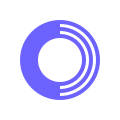
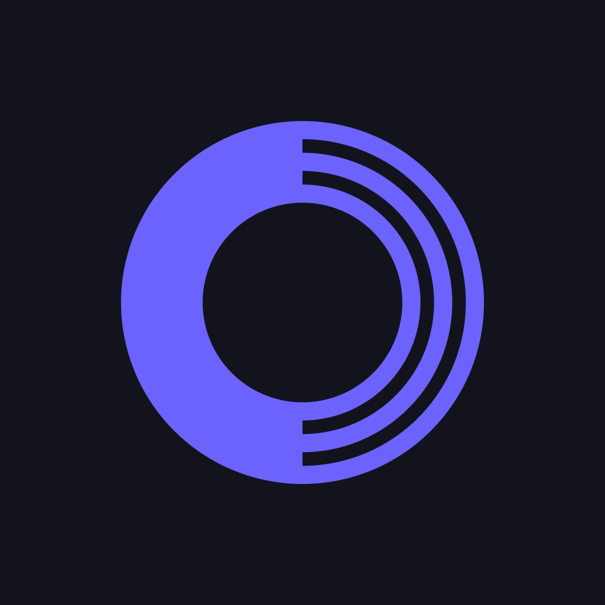
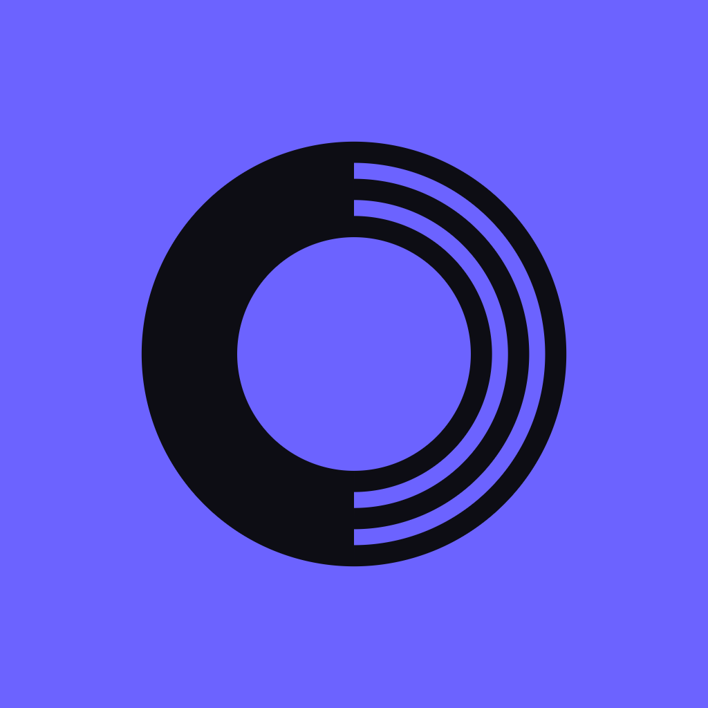
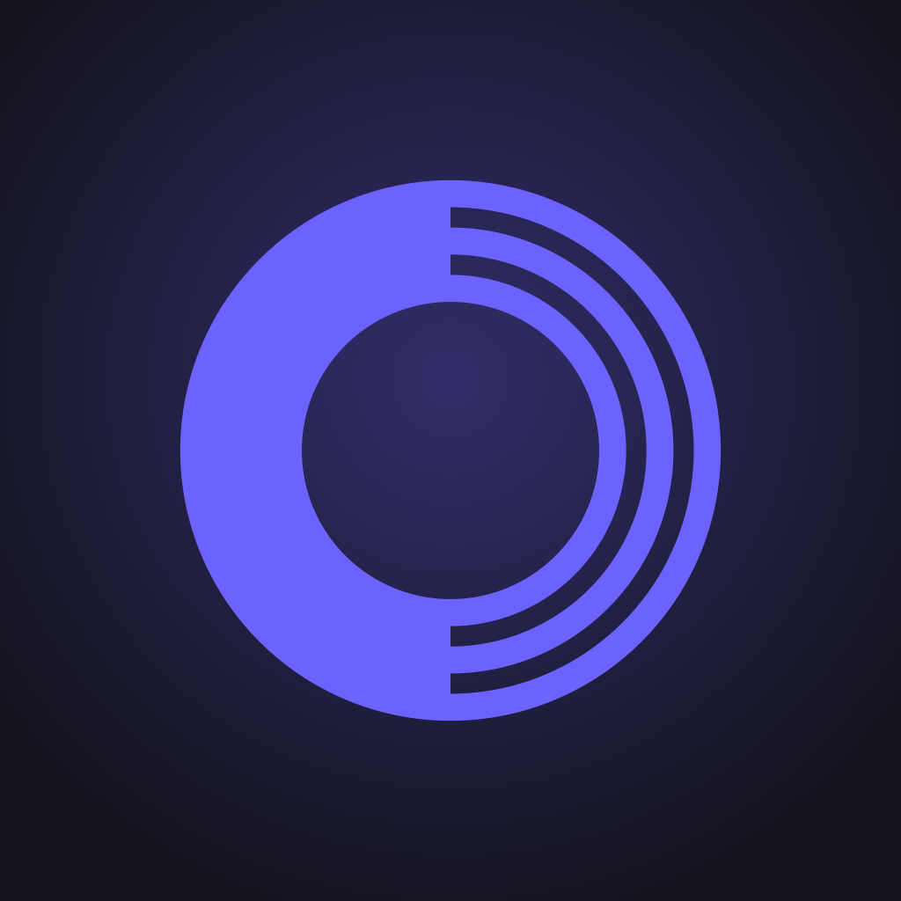
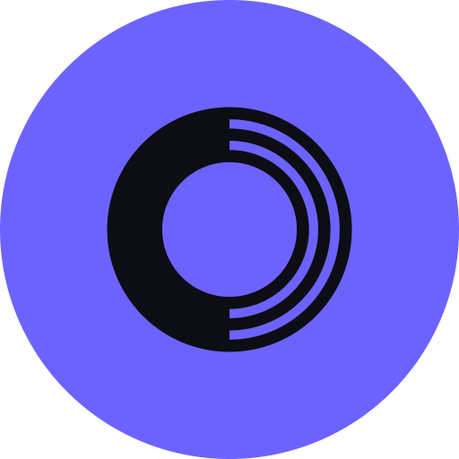
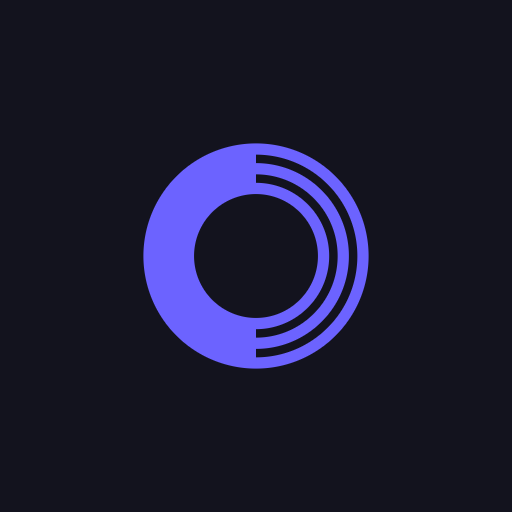
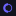

Mark B3 · Gabarito 500
Ondoloop has one mark and one wordmark, with The Habits App available as a descriptor. The mark is a loop, and in every lockup it stands in for the leading O — the two are close enough in width that the substitution reads as a letter rather than a swap. Every file below sits in the project's logo/ folder under an ondoloop- prefix.
The horizontal lockups
Integrated — the primary
The mark is the O. Set to the cap height of the letter it replaces, with the same slight overshoot a round letter takes above and below the baseline. Use it wherever the logo has room to be read as a word.
ondoloop-logo-*.svg
Descriptor — with the tagline
The same lockup carrying The Habits App, centered and tucked up into the descender band so the whole thing stays one horizontal block. Use where the name alone doesn't say what the product is.
ondoloop-lockup-descriptor-*.svg
Stacked, wordmark, mark
Stacked · with tagline
The one place The Habits App is part of the logo. A no-tagline stacked cut ships beside it.
*-stacked-tagline-*.svg
Wordmark
Gabarito Medium at −0.022em. For footers and legal lines under a header that already carries the mark.
ondoloop-wordmark-*.svg

The mark
The loop on its own. It takes the icon, avatar and favicon slots, and anywhere the wordmark already appears nearby.
ondoloop-mark-*.svg
Icons and avatars

app-icon

reversed

glow

avatar

maskable
40
32

16
On dark
On the app's own ground the mark steps up to #8F88FF and the type goes white. Base indigo on near-black falls below 3:1, so the on-dark cut is a different file, not an opacity change.
Where the full spec lives
Construction ratios, clear space, the reduction threshold, color specs, misuse and the complete file index are in Ondoloop Logo — Brand Guidelines, which prints straight to PDF.